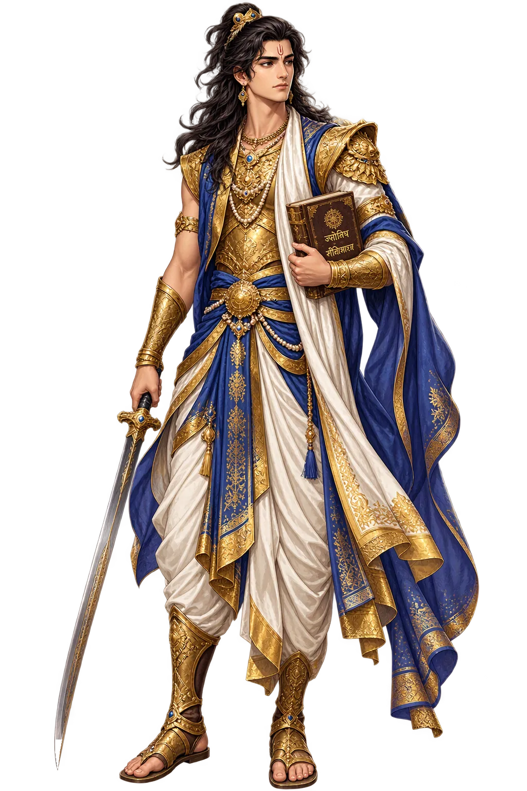
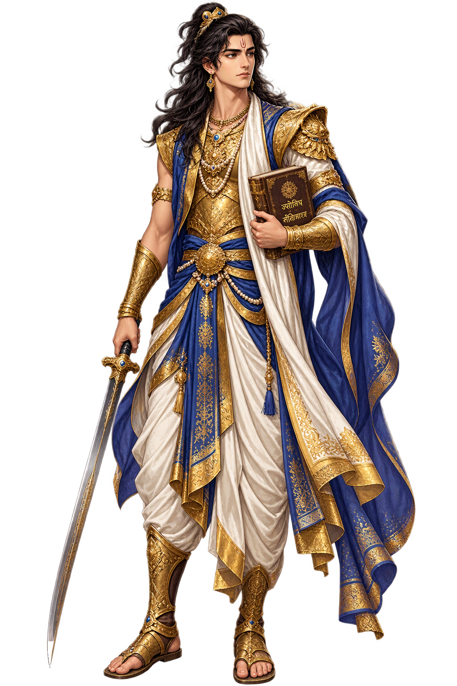

The Living Myth
Twin, Son of Madri · Twin of Nakula, Famed for Wisdom · Son of the Aśvins and Mādrī — twin of Nakula, youngest of the Pāṇḍu princes, famed for wisdom

Stories of Sahadeva
Sahadeva’s mythology is the epic’s study of wisdom without power: the youngest brother whose knowledge was perfect and whose influence was nil. He knew the dice-game was ruin, the war’s timing, the omens’ meaning — and the epic lets him speak each truth once, then moves on. His death on the mountain was for the one pride knowledge permits: the pride of being right.
Mādrī called the Aśvin twins and bore two sons — Nakula first, Sahadeva second — both radiant as the gods. Orphaned at the funeral pyre that took Mādrī, the twins were raised by Kuntī as her own: the youngest of five, the astronomer among warriors, born with the physician-gods’ second sight.
When the challenge to the dice-game came, Sahadeva — who had calculated the stars and the odds — advised refusal to the last. The epic notes that the advice was heard and overridden; the fall of the Pāṇḍavas into thirteen years of loss begins at the moment the youngest brother’s arithmetic is outvoted.
In the incognito year he served Virāṭa as Tantripala, keeper of the cattle — and the herds multiplied under his accounting. The disguise-book’s joke runs deepest here: the astronomer disguised as a cowherd ran the kingdom’s true prosperity while the king praised his other servants.
On the final mountain, Sahadeva fell second — and Yudhiṣṭhira named his sin: ‘he thought none his equal in wisdom’. The epic’s most quietly devastating verdict: even the love of being right is a weight, and the wisest of the five carried his wisdom as others carried vanity.
The Youngest Pāṇḍava, the Astronomer
Sahadeva is the youngest Pāṇḍava: twin of Nakula, son of the Aśvin physicians, and the epic’s scholar-warrior — master of astrology and the calendar, keeper of the sword-skills that matched his twin’s, and the brother whose advice was always right and rarely heeded. Yudhiṣṭhira named him the wisest of the five; the war’s chronology ran by his stars.
His knowledge of the stars set the war’s calendar; the epic calls his astrology infallible.
His blade-work equalled Nakula’s — the twins were the epic’s matched pair of arms.
Like his twin he knew herds — but Sahadeva read their breeding and their futures too.
He advised the dice-refusal and the war’s conduct — right, and passed over.
From the original script to the living URL
सहदेव
The name in its original Sanskrit form. Sahadeva (सहदेव) is attested in the source tradition — “Son of the Aśvins and Mādrī — twin of Nakula, youngest of the Pāṇḍu princes, famed for wisdom”. Its original diacritics and script distinctions carry the full phonetic and orthographic weight of the source tradition.
sahadeva
The plain sahadeva form is identical to the Unicode restoration. Because this name is already written in Latin letters, no diacritics, stress, or script information were lost — only capitalization differs.
Sahadeva
The Unicode restoration does not need to recover lost marks for Sahadeva. Its value is canonical spelling and consistent cataloguing, not the reconstruction of erased orthography. The domain is readable as-is to both DNS and humanity.
Sahadeva.com
This restoration is written entirely in ASCII letters — no Punycode encoding stands between Sahadeva and the DNS. The domain reads identically to machines and to human eyes.
The attested spelling family of Sahadeva
Sahadeva
Restores सहदेव. The full Unicode restoration. sahadeva.com is not in the PuniCodex collection — it is watched for release; if it drops, this temple upgrades to an owned flagship. Attested by MW, Mahabharata.
How Sahadeva was spoken
How Sahadeva travels from ancient script to the modern URL
The lore you have read is the living myth. Extended Lore opens the scholarly vault beneath it: the cult and its material remains, a history of the image, the name after antiquity, a meditation on what the name still means, and the full scholarly apparatus — etymology, orthography, sources.
Enter Extended Lore